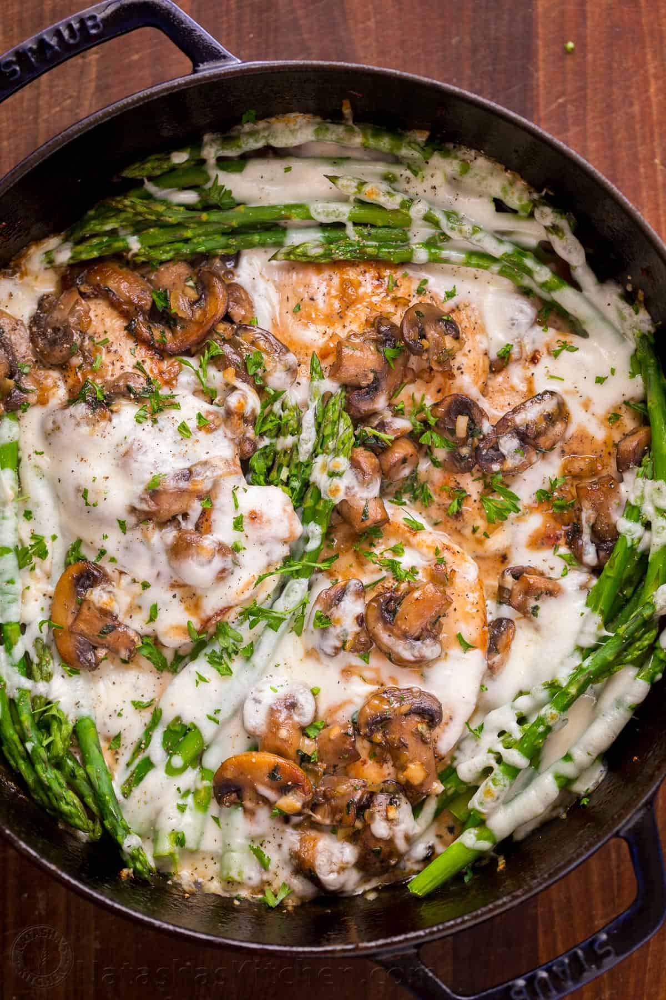

Cheesecake Factory Style Chicken Madeira

Recipe from Yummly
Ingredients
- 1 pound chicken breasts halved
- 1 pound asparagus, blanched
- Salt
- Freshly ground pepper
- 4 tablespoons of butter
- 2 tablespoons of olive oil
- 16 ounces of button mushrooms, thickly sliced
- 1 yellow onion, finely diced
- 2 large garlic gloves, minced
- 2 tablespoons of fresh parsley, finley chopped, plus to garnish
Directions
- To blanch asparagus: Remove fibrous stems from asparagus by snapping them off (watch video above). To blanch asparagus, fill a medium pot with 6 cups water, bring to a boil and add 1 Tbsp salt. Add asparagus and boil uncovered until crisp tender and bright green (2-3 minutes then remove immediately from hot water and set aside).
- Place a large heavy (oven-safe) pan over medium/high heat and melt in 2 Tbsp butter and 1 Tbsp oil. Add thickly sliced mushrooms and cook 5 minutes until soft. Stir in diced onion and cook 3 minutes. Add minced garlic cloves then season with 1/4 tsp salt and 1/4 tsp black pepper and 2 Tbsp fresh parsley. Cook another 2 minutes then remove mixture to a plate and wipe skillet clean with wet paper towel.
- Slice chicken breasts in half lengthwise and pound each cutlet between plastic wrap until no more than 1/4″ thick. Season chicken breasts all over with 1/2 tsp salt and 1/4 tsp black pepper. Place same pan over medium/high heat and add 1 Tbsp butter and 1 Tbsp oil. When butter is finished foaming, add chicken breasts and saute 3 to 4 minutes per side or until golden brown and cooked through. Remove chicken from pan to the same plate as mushrooms.
- In the same pan, add 1 1/2 cups Madeira and boil until reduced by half (5 minutes of vigorous boiling), scraping the bottom of the pan to deglaze. Add 1 1/2 cups beef broth and boil until 2/3 cup liquid remains or about 1/4 of it’s original volume (10 min). Reduce heat to medium, add 1/2 cup cream and simmer until sauce thickens (2 min). Season sauce with salt and pepper to taste and turn off heat.
- Return chicken to the pan, turning it to coat in the sauce. Top with mushrooms, asparagus and sprinkle 1 cup of mozzarella cheese over the top. Broil 3-4 minutes or until cheese is melted. Remove from oven, garnish with fresh parsley.